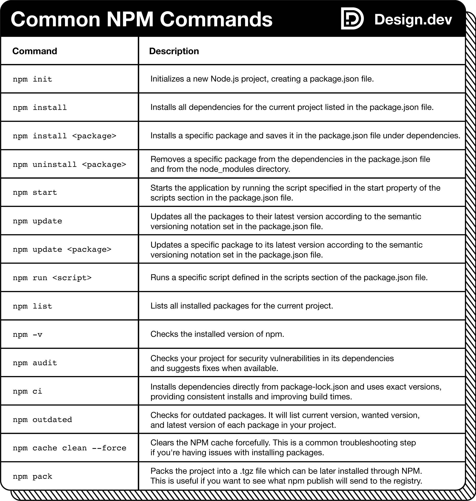

Dominar o Node Package Manager (NPM) é uma habilidade poderosa para gerenciar dependências, scripts e versões em seus projetos JavaScript. O NPM ajuda a evitar conflitos de versão e pode automatizar tarefas como testes e implantação de servidores.
Para começar, certifique-se de ter o Node.js instalado no seu sistema.
Em seguida, preparamos uma folha de referência com 15 comandos comumente usados. Aproveite!

package.json.Instale o Node.js:
Verifique a instalação:
node -v
npm -v
Inicialize um projeto:
npm init
package.json.Aqui estão 15 comandos essenciais para dominar o NPM:
Inicializar um projeto:
npm init
Instalar um pacote localmente:
npm install <nome-do-pacote>
Instalar um pacote globalmente:
npm install -g <nome-do-pacote>
Instalar um pacote como dependência de desenvolvimento:
npm install <nome-do-pacote> --save-dev
Atualizar um pacote:
npm update <nome-do-pacote>
Desinstalar um pacote:
npm uninstall <nome-do-pacote>
Listar pacotes instalados:
npm list
Verificar pacotes desatualizados:
npm outdated
Executar scripts definidos no package.json:
npm run <nome-do-script>
Instalar todas as dependências de um projeto:
npm install
Publicar um pacote no NPM:
npm publish
Adicionar um usuário ao NPM:
npm adduser
Login no NPM:
npm login
Verificar permissões de um pacote:
npm access
Limpar o cache do NPM:
npm cache clean --force
Aqui está um resumo organizado para você consultar:
O que é?
Por que usar?
Como começar?
node -v
npm -v
npm init
Comandos mais usados
npm init
npm install <nome-do-pacote>
npm install -g <nome-do-pacote>
npm install <nome-do-pacote> --save-dev
npm update <nome-do-pacote>
npm uninstall <nome-do-pacote>
npm list
npm outdated
npm run <nome-do-script>
npm install
npm publish
npm adduser
npm login
npm access
npm cache clean --force
npm init para iniciar um novo projeto.express ou
lodash.package.json para testes, builds ou
deploys.